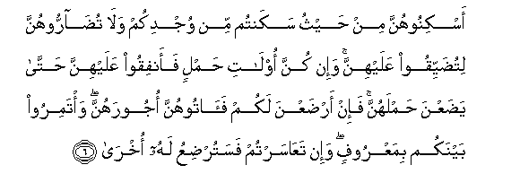

Sacred Texts Islam Index
Hypertext Qur'an Unicode Palmer Pickthall Yusuf Ali English Rodwell
Sūra LXV.: Ṭalāq, or Divorce. Index
Previous Next

The Holy Quran, tr. by Yusuf Ali, [1934], at sacred-texts.com
Sūra LXV.: Ṭalāq, or Divorce.
Section 1
1. Ya ayyuha alnnabiyyu itha tallaqtumu alnnisaa fatalliqoohunna liAAiddatihinna waahsoo alAAiddata waittaqoo Allaha rabbakum la tukhrijoohunna min buyootihinna wala yakhrujna illa an ya/teena bifahishatin mubayyinatin watilka hudoodu Allahi waman yataAAadda hudooda Allahi faqad thalama nafsahu la tadree laAAalla Allaha yuhdithu baAAda thalika amran
1. O Prophet! When ye
Do divorce women,
Divorce them at their
Prescribed periods,
And count (accurately)
Their prescribed periods:
And fear God your Lord:
And turn them not out
Of their houses, nor shall
They (themselves) leave,
Except in case they are
Guilty of some open lewdness,
Those are limits
Set by God: and any
Who transgresses the limits
Of God, does verily
Wrong his (own) soul:
Thou knowest not if
Perchance God will
Bring about thereafter
Some new situation.
2. Fa-itha balaghna ajalahunna faamsikoohunna bimaAAroofin aw fariqoohunna bimaAAroofin waashhidoo thaway AAadlin minkum waaqeemoo alshshahadata lillahi thalikum yooAAathu bihi man kana yu/minu biAllahi waalyawmi al-akhiri waman yattaqi Allaha yajAAal lahu makhrajan
2. Thus when they fulfil
Their term appointed,
Either take them back
On equitable terms
Or part with them
On equitable terms;
And take for witness
Two persons from among you,
Endued with justice,
And establish the evidence
(As) before God. Such
Is the admonition given
To him who believes
In God and the Last Day.
And for those who fear
God, He (ever) prepares
A way out,
3. Wayarzuqhu min haythu la yahtasibu waman yatawakkal AAala Allahi fahuwa hasbuhu inna Allaha balighu amrihi qad jaAAala Allahu likulli shay-in qadran
3. And He provides for him
From (sources) he never
Could imagine. And if
Any one puts his trust
In God, sufficient is (God)
For him. For God will
Surely accomplish His purpose:
Verily, for all things
Has God appointed
A due proportion.
4. Waalla-ee ya-isna mina almaheedi min nisa-ikum ini irtabtum faAAiddatuhunna thalathatu ashhurin waalla-ee lam yahidna waolatu al-ahmali ajaluhunna an yadaAAna hamlahunna waman yattaqi Allaha yajAAal lahu min amrihi yusran
4. Such of your women
As have passed the age
Of monthly courses, for them
The prescribed period, if ye
Have any doubts, is
Three months, and for those
Who have no courses
(It is the same):
For those who carry
(Life within their wombs),
Their period is until
They deliver their burdens:
And for those who
Fear God, He will
Make their path easy.
5. Thalika amru Allahi anzalahu ilaykum waman yattaqi Allaha yukaffir AAanhu sayyi-atihi wayuAAthim lahu ajran
5. That is the Command
Of God, which He
Has sent down to you:
And if any one fears God,
He will remove his ills
From him, and will enlarge
His reward.

6. Askinoohunna min haythu sakantum min wujdikum wala tudarroohunna litudayyiqoo AAalayhinna wa-in kunna olati hamlin faanfiqoo AAalayhinna hatta yadaAAna hamlahunna fa-in ardaAAna lakum faatoohunna ojoorahunna wa/tamiroo baynakum bimaAAroofin wa-in taAAasartum fasaturdiAAu lahu okhra
6. Let the women live
(In ‘iddat) in the same
Style as ye live,
According to your means:
Annoy them not, so as
To restrict them.
And if they carry (life
In their wombs), then
Spend (your substance) on them
Until they deliver
Their burden: and if
They suckle your (offspring),
Give them their recompense:
And take mutual counsel
Together, according to
What is just and reasonable.
And if ye find yourselves
In difficulties, let another
Woman suckle (the child)
On the (father's) behalf.
7. Liyunfiq thoo saAAatin min saAAatihi waman qudira AAalayhi rizquhu falyunfiq mimma atahu Allahu la yukallifu Allahu nafsan illa ma ataha sayajAAalu Allahu baAAda AAusrin yusran
7. Let the man of means
Spend according to
His means: and the man
Whose resources are restricted,
Let him spend according
To what God has given him.
God puts no burden
On any person beyond
What He has given him.
After a difficulty, God
Will soon grant relief.